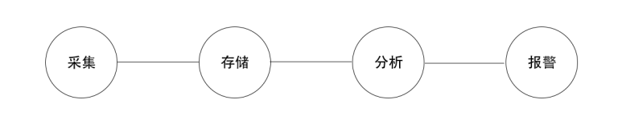
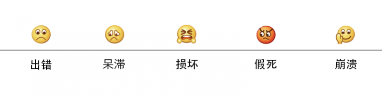
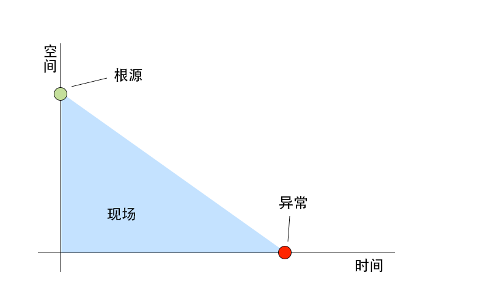
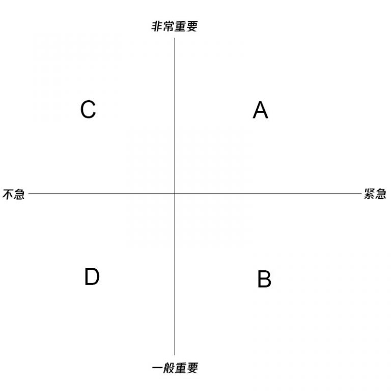
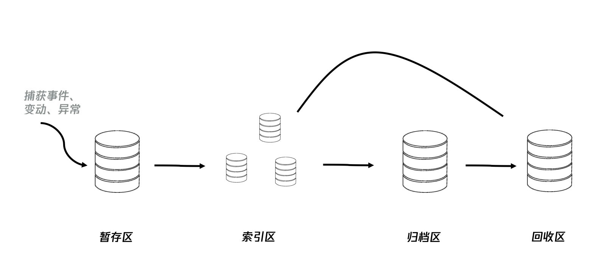
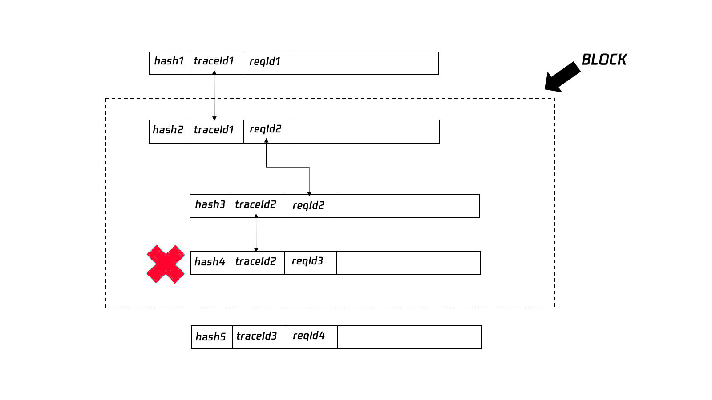
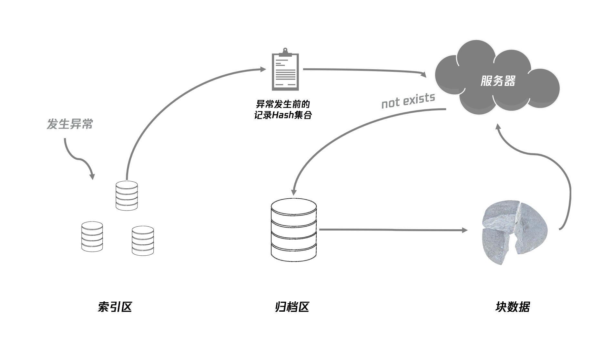
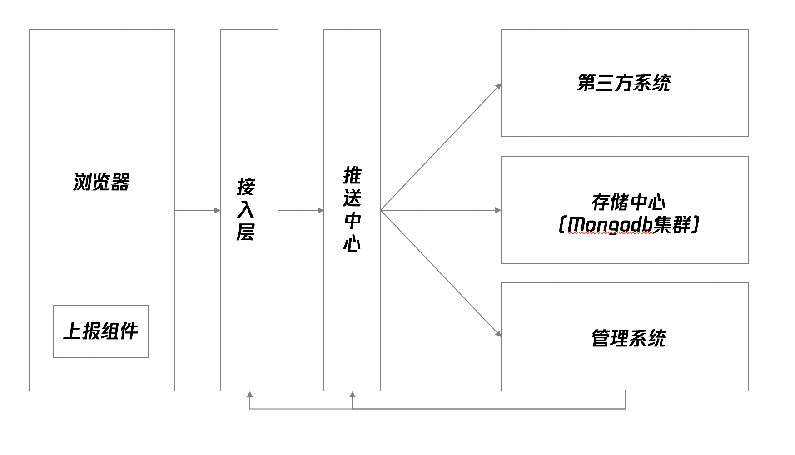

前端异常监控解决方案研究
2023/08/29 · YinHao前端监控包括行为监控、异常监控、性能监控等，本文主要讨论异常监控。对于前端而言，和后端处于同一个监控系统中，前端有自己的监控方案，后端也有自己等监控方案，但两者并不分离，因为一个用户在操作应用过程中如果出现异常，有可能是前端引起，也有可能是后端引起，需要有一个机制，将前后端串联起来，使监控本身统一于监控系统。因此，即使只讨论前端异常监控，其实也不能严格区分前后端界限，而要根据实际系统的设计，在最终的报表中体现出监控对开发和业务的帮助。
一般而言，一个监控系统，大致可以分为四个阶段：日志采集、日志存储、统计与分析、报告和警告。

采集阶段：收集异常日志，先在本地做一定的处理，采取一定的方案上报到服务器。
存储阶段：后端接收前端上报的异常日志，经过一定处理，按照一定的存储方案存储。
分析阶段：分为机器自动分析和人工分析。机器自动分析，通过预设的条件和算法，对存储的日志信息进行统计和筛选，发现问题，触发报警。人工分析，通过提供一个可视化的数据面板，让系统用户可以看到具体的日志数据，根据信息，发现异常问题根源。
报警阶段：分为告警和预警。告警按照一定的级别自动报警，通过设定的渠道，按照一定的触发规则进行。预警则在异常发生前，提前预判，给出警告。
1 前端异常
前端异常是指在用户使用 Web 应用时无法快速得到符合预期结果的情况，不同的异常带来的后果程度不同，轻则引起用户使用不悦，重则导致产品无法使用，使用户丧失对产品的认可。
1.1 前端异常分类
根据异常代码的后果的程度，对前端异常的表现分为如下几类

a. 出错
界面呈现的内容与用户预期的内容不符，例如点击进入非目标界面，数据不准确，出现的错误提示不可理解，界面错位，提交后跳转到错误界面等情况。这类异常出现时，虽然产品本身功能还能正常使用，但用户无法达成自己目标。
b. 呆滞
界面出现操作后没有反应的现象，例如点击按钮无法提交，提示成功后无法继续操作。这类异常出现时，产品已经存在界面级局部不可用现象。
c. 损坏
界面出现无法实现操作目的的现象，例如点击无法进入目标界面，点击无法查看详情内容等。这类异常出现时，应用部分功能无法被正常使用。
d. 假死
界面出现卡顿，无法对任何功能进行使用的现象。例如用户无法登陆导致无法使用应用内功能，由于某个遮罩层阻挡且不可关闭导致无法进行任何后续操作。这类异常出现时，用户很可能杀死应用。
e. 崩溃
应用出现经常性自动退出或无法操作的现象。例如间歇性 crash，网页无法正常加载或加载后无法进行任何操作。这类异常持续出现，将直接导致用户流失，影响产品生命力。
1.2 异常错误原因分类
前端产生异常的原因主要分 5 类：
<table><tbody><tr><td><strong>原因</strong></td><td><strong>案例</strong></td><td><strong>频率</strong></td></tr><tr><td>逻辑错误</td><td>1) 业务逻辑判断条件错误<br>2) 事件绑定顺序错误<br>3) 调用栈时序错误<br>4) 错误的操作js对象</td><td>经常</td></tr><tr><td>数据类型错误</td><td>1) 将null视作对象读取property<br>2) 将undefined视作数组进行遍历<br>3) 将字符串形式的数字直接用于加运算<br>4) 函数参数未传</td><td>经常</td></tr><tr><td>语法句法错误</td><td></td><td>较少</td></tr><tr><td>网络错误</td><td>1) 慢<br>2) 服务端未返回数据但仍200，前端按正常进行数据遍历<br>3) 提交数据时网络中断<br>4) 服务端500错误时前端未做任何错误处理</td><td>偶尔</td></tr><tr><td>系统错误</td><td>1) 内存不够用<br>2) 磁盘塞满<br>3) 壳不支持API<br>4) 不兼容</td><td>较少</td></tr></tbody></table>
2 异常采集
2.1 采集内容
当异常出现的时候，我们需要知道异常的具体信息，根据异常的具体信息来决定采用什么样的解决方案。在采集异常信息时，可以遵循 4W 原则：
WHO did WHAT and get WHICH exception in WHICH environment?
a. 用户信息
出现异常时该用户的信息，例如该用户在当前时刻的状态、权限等，以及需要区分用户可多终端登录时，异常对应的是哪一个终端。
b. 行为信息
用户进行什么操作时产生了异常：所在的界面路径；执行了什么操作；操作时使用了哪些数据；当时的 API 吐了什么数据给客户端；如果是提交操作，提交了什么数据；上一个路径；上一个行为日志记录 ID 等。
c. 异常信息
产生异常的代码信息：用户操作的 DOM 元素节点；异常级别；异常类型；异常描述；代码 stack 信息等。
d. 环境信息
网络环境；设备型号和标识码；操作系统版本；客户端版本；API 接口版本等。
<table><tbody><tr><td><strong>字段</strong></td><td><strong>类型</strong></td><td><strong>解释</strong></td></tr><tr><td>requestId</td><td>String</td><td>一个界面产生一个requestId</td></tr><tr><td>traceId</td><td>String</td><td>一个阶段产生一个traceId，用于追踪和一个异常相关的所有日志记录</td></tr><tr><td>hash</td><td>String</td><td>这条log的唯一标识码，相当于logId，但它是根据当前日志记录的具体内容而生成的</td></tr><tr><td>time</td><td>Number</td><td>当前日志产生的时间（保存时刻）</td></tr><tr><td>userId</td><td>String</td><td></td></tr><tr><td>userStatus</td><td>Number</td><td>当时，用户状态信息（是否可用/禁用）</td></tr><tr><td>userRoles</td><td>Array</td><td>当时，前用户的角色列表</td></tr><tr><td>userGroups</td><td>Array</td><td>当时，用户当前所在组，组别权限可能影响结果</td></tr><tr><td>userLicenses</td><td>Array</td><td>当时，许可证，可能过期</td></tr><tr><td>path</td><td>String</td><td>所在路径，URL</td></tr><tr><td>action</td><td>String</td><td>进行了什么操作</td></tr><tr><td>referer</td><td>String</td><td>上一个路径，来源URL</td></tr><tr><td>prevAction</td><td>String</td><td>上一个操作</td></tr><tr><td>data</td><td>Object</td><td>当前界面的state、data</td></tr><tr><td>dataSources</td><td>Array<Object></td><td>上游api给了什么数据</td></tr><tr><td>dataSend</td><td>Object</td><td>提交了什么数据</td></tr><tr><td>targetElement</td><td>HTMLElement</td><td>用户操作的DOM元素</td></tr><tr><td>targetDOMPath</td><td>Array<HTMLElement></td><td>该DOM元素的节点路径</td></tr><tr><td>targetCSS</td><td>Object</td><td>该元素的自定义样式表</td></tr><tr><td>targetAttrs</td><td>Object</td><td>该元素当前的属性及值</td></tr><tr><td>errorType</td><td>String</td><td>错误类型</td></tr><tr><td>errorLevel</td><td>String</td><td>异常级别</td></tr><tr><td>errorStack</td><td>String</td><td>错误stack信息</td></tr><tr><td>errorFilename</td><td>String</td><td>出错文件</td></tr><tr><td>errorLineNo</td><td>Number</td><td>出错行</td></tr><tr><td>errorColNo</td><td>Number</td><td>出错列位置</td></tr><tr><td>errorMessage</td><td>String</td><td>错误描述（开发者定义）</td></tr><tr><td>errorTimeStamp</td><td>Number</td><td>时间戳</td></tr><tr><td>eventType</td><td>String</td><td>事件类型</td></tr><tr><td>pageX</td><td>Number</td><td>事件x轴坐标</td></tr><tr><td>pageY</td><td>Number</td><td>事件y轴坐标</td></tr><tr><td>screenX</td><td>Number</td><td>事件x轴坐标</td></tr><tr><td>screenY</td><td>Number</td><td>事件y轴坐标</td></tr><tr><td>pageW</td><td>Number</td><td>页面宽度</td></tr><tr><td>pageH</td><td>Number</td><td>页面高度</td></tr><tr><td>screenW</td><td>Number</td><td>屏幕宽度</td></tr><tr><td>screenH</td><td>Number</td><td>屏幕高度</td></tr><tr><td>eventKey</td><td>String</td><td>触发事件的键</td></tr><tr><td>network</td><td>String</td><td>网络环境描述</td></tr><tr><td>userAgent</td><td>String</td><td>客户端描述</td></tr><tr><td>device</td><td>String</td><td>设备描述</td></tr><tr><td>system</td><td>String</td><td>操作系统描述</td></tr><tr><td>appVersion</td><td>String</td><td>应用版本</td></tr><tr><td>apiVersion</td><td>String</td><td>接口版本</td></tr></tbody></table>
这是一份非常庞大的日志字段表，它几乎囊括了一个异常发生时，能够对异常周遭环境进行详细描述的所有信息。不同情况下，这些字段并不一定都会收集，由于我们会采用文档数据库存储日志，因此，并不影响它的实际存储结果。
2.2 异常捕获
前端捕获异常分为全局捕获和单点捕获。全局捕获代码集中，易于管理；单点捕获作为补充，对某些特殊情况进行捕获，但分散，不利于管理。
a、全局捕获
通过全局的接口，将捕获代码集中写在一个地方，可以利用的接口有：
-
window.addEventListener('error') / window.addEventListener('unhandledrejection') / document.addEventListener('click')等 -
框架级别的全局监听，例如 aixos 中使用
interceptor进行拦截，vue、react 都有自己的错误采集接口 -
通过对全局函数进行封装包裹，实现在在调用该函数时自动捕获异常
-
对实例方法重写（Patch），在原有功能基础上包裹一层，例如对 console.error 进行重写，在使用方法不变的情况下也可以异常捕获
b、单点捕获
在业务代码中对单个代码块进行包裹，或在逻辑流程中打点，实现有针对性的异常捕获：
- try…catch
- 专门写一个函数来收集异常信息，在异常发生时，调用该函数
- 专门写一个函数来包裹其他函数，得到一个新函数，该新函数运行结果和原函数一模一样，只是在发生异常时可以捕获异常
2.3 跨域脚本异常
由于浏览器安全策略限制，跨域脚本报错时，无法直接获取错误的详细信息，只能得到一个 Script Error。例如，我们会引入第三方依赖，或者将自己的脚本放在 CDN 时。
解决 Script Error 的方法：
方案一：
- 将 js 内联到 HTML 中
- 将 js 文件与 HTML 放在同域下
方案二：
- 为页面上 script 标签添加 crossorigin 属性
- 被引入脚本所在服务端响应头中，增加 Access-Control-Allow-Origin 来支持跨域资源共享
2.4 异常录制
对于一个异常，仅仅拥有该异常的信息还不足以完全抓住问题的本质，因为异常发生的位置，并不一定是异常根源所在的位置。我们需要对异常现场进行还原，才能复原问题全貌，甚至避免类似问题在其他界面中发生。这里需要引进一个概念，就是“异常录制”。录制通过“时间”“空间”两个维度记录异常发生前到发生的整个过程，对于找到异常根源更有帮助。

上图表示，当异常发生时，异常的根源可能离我们很远，我们需要回到异常发生的现场，找到异常根源。就像现实生活中破案一样，如果有监控摄影机对案发过程的录影，对破案来说更加容易。如果仅仅关注异常本身，要找到异常的根源，需要凭借运气，但有了异常录制的帮助，找到根源就更加容易。
所谓的“异常录制”，实际上就是通过技术手段，收集用户的操作过程，对用户的每一个操作都进行记录，在发生异常时，把一定时间区间内的记录重新运行，形成影像进行播放，让调试者无需向用户询问，就能看到用户当时的操作过程。

上图是来自阿里的一套异常录制还原方案示意图，用户在界面上的操作产生的 events 和 mutation 被产品收集起来，上传到服务器，经过队列处理按顺序存放到数据库中。当需要进行异常重现的时候，将这些记录从数据库中取出，采用一定的技术方案，顺序播放这些记录，即可实现异常还原。
2.5 异常级别
一般而言，我们会将收集信息的级别分为 info，warn，error 等，并在此基础上进行扩展。
当我们监控到异常发生时，可以将该异常划分到“重要——紧急”模型中分为 A、B、C、D 四个等级。有些异常，虽然发生了，但是并不影响用户的正常使用，用户其实并没有感知到，虽然理论上应该修复，但是实际上相对于其他异常而言，可以放在后面进行处理。

下文会讨论告警策略，一般而言，越靠近右上角的异常会越快通知，保证相关人员能最快接收到信息，并进行处理。A 级异常需要快速响应，甚至需要相关负责人知悉。
在收集异常阶段，可根据第一节划分的异常后果来判断异常的严重程度，在发生异常时选择对应的上报方案进行上报。
3 整理与上报方案
前文已经提到，除了异常报错信息本身，我们还需要记录用户操作日志，以实现场景复原。这就涉及到上报的量和频率问题。如果任何日志都立即上报，这无异于自造的 DDOS 攻击。因此，我们需要合理的上报方案。下文会介绍 4 种上报方案，但实际我们不会仅限于其中一种，而是经常同时使用，对不同级别的日志选择不同的上报方案。
3.1 前端存储日志
我们前面提到，我们并不单单采集异常本身日志，而且还会采集与异常相关的用户行为日志。单纯一条异常日志并不能帮助我们快速定位问题根源，找到解决方案。但如果要收集用户的行为日志，又要采取一定的技巧，而不能用户每一个操作后，就立即将该行为日志传到服务器，对于具有大量用户同时在线的应用，如果用户一操作就立即上传日志，无异于对日志服务器进行 DDOS 攻击。因此，我们先将这些日志存储在用户客户端本地，达到一定条件之后，再同时打包上传一组日志。
那么，如何进行前端日志存储呢？我们不可能直接将这些日志用一个变量保存起来，这样会挤爆内存，而且一旦用户进行刷新操作，这些日志就丢失了，因此，我们自然而然想到前端数据持久化方案。
目前，可用的持久化方案可选项也比较多了，主要有：Cookie、localStorage、sessionStorage、IndexedDB、webSQL 、FileSystem 等等。那么该如何选择呢？我们通过一个表来进行对比：
<table><tbody><tr><td><strong>存储方式</strong></td><td>cookie</td><td>localStorage</td><td>sessionStorage</td><td>IndexedDB</td><td>webSQL</td><td>FileSystem</td></tr><tr><td><strong>类型</strong></td><td></td><td>key-value</td><td>key-value</td><td>NoSQL</td><td>SQL</td><td></td></tr><tr><td><strong>数据格式</strong></td><td>string</td><td>string</td><td>string</td><td>object</td><td></td><td></td></tr><tr><td><strong>容量</strong></td><td>4k</td><td>5M</td><td>5M</td><td>500M</td><td>60M</td><td></td></tr><tr><td><strong>进程</strong></td><td>同步</td><td>同步</td><td>同步</td><td>异步</td><td>异步</td><td></td></tr><tr><td><strong>检索</strong></td><td></td><td>key</td><td>key</td><td>key, index</td><td>field</td><td></td></tr><tr><td><strong>性能</strong></td><td></td><td>读快写慢</td><td></td><td>读慢写快</td><td></td><td></td></tr></tbody></table>
综合之后，IndexedDB 是最好的选择，它具有容量大、异步的优势，异步的特性保证它不会对界面的渲染产生阻塞。而且 IndexedDB 是分库的，每个库又分 store，还能按照索引进行查询，具有完整的数据库管理思维，比 localStorage 更适合做结构化数据管理。但是它有一个缺点，就是 api 非常复杂，不像 localStorage 那么简单直接。针对这一点，我们可以使用 hello-indexeddb 这个工具，它用 Promise 对复杂 api 进行来封装，简化操作，使 IndexedDB 的使用也能做到 localStorage 一样便捷。另外，IndexedDB 是被广泛支持的 HTML5 标准，兼容大部分浏览器，因此不用担心它的发展前景。
接下来，我们究竟应该怎么合理使用 IndexedDB，保证我们前端存储的合理性呢？

上图展示了前端存储日志的流程和数据库布局。当一个事件、变动、异常被捕获之后，形成一条初始日志，被立即放入暂存区（indexedDB 的一个 store），之后主程序就结束了收集过程，后续的事只在 webworker 中发生。在一个 webworker 中，一个循环任务不断从暂存区中取出日志，对日志进行分类，将分类结果存储到索引区中，并对日志记录的信息进行丰富，将最终将会上报到服务端的日志记录转存到归档区。而当一条日志在归档区中存在的时间超过一定天数之后，它就已经没有价值了，但是为了防止特殊情况，它被转存到回收区，再经历一段时间后，就会被从回收区中清除。
3.2 前端整理日志
上文讲到，在一个 webworker 中对日志进行整理后存到索引区和归档区，那么这个整理过程是怎样的呢？
由于我们下文要讲的上报，是按照索引进行的，因此，我们在前端的日志整理工作，主要就是根据日志特征，整理出不同的索引。我们在收集日志时，会给每一条日志打上一个 type，以此进行分类，并创建索引，同时通过 object-hashcode 计算每个 log 对象的 hash 值，作为这个 log 的唯一标志。
- 将所有日志记录按时序存放在归档区，并将新入库的日志加入索引
- BatchIndexes：批量上报索引（包含性能等其他日志），可一次批量上报 100 条
- MomentIndexes：即时上报索引，一次全部上报
- FeedbackIndexes：用户反馈索引，一次上报一条
- BlockIndexes：区块上报索引，按异常/错误（traceId，requestId）分块，一次上报一块
- 上报完成后，被上报过的日志对应的索引删除
- 3 天以上日志进入回收区
- 7 天以上的日志从回收区清除
rquestId：同时追踪前后端日志。由于后端也会记录自己的日志，因此，在前端请求 api 的时候，默认带上 requestId，后端记录的日志就可以和前端日志对应起来。
traceId：追踪一个异常发生前后的相关日志。当应用启动时，创建一个 traceId，直到一个异常发生时，刷新 traceId。把一个 traceId 相关的 requestId 收集起来，把这些 requestId 相关的日志组合起来，就是最终这个异常相关的所有日志，用来对异常进行复盘。

上图举例展示了如何利用 traceId 和 requestId 找出和一个异常相关的所有日志。在上图中，hash4 是一条异常日志，我们找到 hash4 对应的 traceId 为 traceId2，在日志列表中，有两条记录具有该 traceId，但是 hash3 这条记录并不是一个动作的开始，因为 hash3 对应的 requestId 为 reqId2，而 reqId2 开始于 hash2，因此，我们实际上要把 hash2 也加入到该异常发生的整个复盘备选记录中。总结起来就是，我们要找出同一个 traceId 对应的所有 requestId 对应的日志记录，虽然有点绕，但稍理解就可以明白其中的道理。
我们把这些和一个异常相关的所有日志集合起来，称为一个 block，再利用日志的 hash 集合，得出这个 block 的 hash，并在索引区中建立索引，等待上报。
3.3 上报日志
上报日志也在 webworker 中进行，为了和整理区分，可以分两个 worker。上报的流程大致为：在每一个循环中，从索引区取出对应条数的索引，通过索引中的 hash，到归档区取出完整的日志记录，再上传到服务器。
按照上报的频率（重要紧急度）可将上报分为四种：
a. 即时上报
收集到日志后，立即触发上报函数。仅用于 A 类异常。而且由于受到网络不确定因素影响，A 类日志上报需要有一个确认机制，只有确认服务端已经成功接收到该上报信息之后，才算完成。否则需要有一个循环机制，确保上报成功。
b. 批量上报
将收集到的日志存储在本地，当收集到一定数量之后再打包一次性上报，或者按照一定的频率（时间间隔）打包上传。这相当于把多次合并为一次上报，以降低对服务器的压力。
c. 区块上报
将一次异常的场景打包为一个区块后进行上报。它和批量上报不同，批量上报保证了日志的完整性，全面性，但会有无用信息。而区块上报则是针对异常本身的，确保单个异常相关的日志被全部上报。
d. 用户主动提交
在界面上提供一个按钮，用户主动反馈 bug。这有利于加强与用户的互动。
或者当异常发生时，虽然对用户没有任何影响，但是应用监控到了，弹出一个提示框，让用户选择是否愿意上传日志。这种方案适合涉及用户隐私数据时。
<table><tbody><tr><td><strong> </strong></td><td><strong>即时上报</strong></td><td><strong>批量上报</strong></td><td><strong>区块上报</strong></td><td><strong>用户反馈</strong></td></tr><tr><td>时效</td><td>立即</td><td>定时</td><td>稍延时</td><td>延时</td></tr><tr><td>条数</td><td>一次全部上报</td><td>一次100条</td><td>单次上报相关条目</td><td>一次1条</td></tr><tr><td>容量</td><td>小</td><td>中</td><td>–</td><td>–</td></tr><tr><td>紧急</td><td>紧急重要</td><td>不紧急</td><td>不紧急但重要</td><td>不紧急</td></tr></tbody></table>
即时上报虽然叫即时，但是其实也是通过类似队列的循环任务去完成的，它主要是尽快把一些重要的异常提交给监控系统，好让运维人员发现问题，因此，它对应的紧急程度比较高。
批量上报和区块上报的区别：批量上报是一次上报一定条数，比如每 2 分钟上报 1000 条，直到上报完成。而区块上报是在异常发生之后，马上收集和异常相关的所有日志，查询出哪些日志已经由批量上报上报过了，剔除掉，把其他相关日志上传，和异常相关的这些日志相对而言更重要一些，它们可以帮助尽快复原异常现场，找出发生异常的根源。
用户提交的反馈信息，则可以慢悠悠上报上去。
为了确保上报是成功的，在上报时需要有一个确认机制，由于在服务端接收到上报日志之后，并不会立即存入数据库，而是放到一个队列中，因此，前后端在确保日志确实已经记录进数据库这一点上需要再做一些处理。

上图展示了上报的一个大致流程，在上报时，先通过 hash 查询，让客户端知道准备要上报的日志集合中，是否存在已经被服务端保存好的日志，如果已经存在，就将这些日志去除，避免重复上报，浪费流量。
3.4 压缩上报数据
一次性上传批量数据时，必然遇到数据量大，浪费流量，或者传输慢等情况，网络不好的状态下，可能导致上报失败。因此，在上报之前进行数据压缩也是一种方案。
对于合并上报这种情况，一次的数据量可能要十几 k，对于日 pv 大的站点来说，产生的流量还是很可观的。所以有必要对数据进行压缩上报。lz-string 是一个非常优秀的字符串压缩类库，兼容性好，代码量少，压缩比高，压缩时间短，压缩率达到惊人的 60%。但它基于 LZ78 压缩，如果后端不支持解压，可选择 gzip 压缩，一般而言后端会默认预装 gzip，因此，选择 gzip 压缩数据也可以，工具包 pako 中自带了 gzip 压缩，可以尝试使用。
4 日志接收与存储
4.1 接入层与消息队列
一般通过提供独立的日志服务器接收客户端日志，接收过程中，要对客户端日志内容的合法性、安全性等进行甄别，防止被人攻击。而且由于日志提交一般都比较频繁，多客户端同时并发的情况也常见。通过消息队列将日志信息逐一处理后写入到数据库进行保存也是比较常用的方案。

上图为腾讯 BetterJS 的架构图，其中“接入层”和“推送中心”就是这里提到的接入层和消息队列。BetterJS 将整个前端监控的各个模块进行拆分，推送中心承担了将日志推送到存储中心进行存储和推送给其他系统（例如告警系统）的角色，但我们可以把接收日志阶段的队列独立出来看，在接入层和存储层之间做一个过渡。
4.2 日志存储系统
存储日志是一个脏活累活，但是不得不做。对于小应用，单库单表加优化就可以应付。一个成规模的应用，如果要提供更标准高效的日志监控服务，常常需要在日志存储架构上下一些功夫。目前业界已经有比较完备的日志存储方案，主要有：Hbase 系，Dremel 系，Lucene 系等。总体而言，日志存储系统主要面对的问题是数据量大，数据结构不规律，写入并发高，查询需求大等。一般一套日志存储系统，要解决上面这些问题，就要解决写入的缓冲，存储介质按日志时间选择，为方便快速读取而设计合理的索引系统等等。
由于日志存储系统方案比较成熟，这里就不再做更多讨论。
4.3 搜索
日志的最终目的是要使用，由于一般日志的体量都非常大，因此，要在庞大的数据中找到需要的日志记录，需要依赖比较好的搜索引擎。Splunk 是一套成熟的日志存储系统，但它是付费使用的。按照 Splunk 的框架，Elk 是 Splunk 的开源实现，Elk 是 ElasticSearch、Logstash、Kibana 的结合，ES 基于 Lucene 的存储、索引的搜索引擎；logstash 是提供输入输出及转化处理插件的日志标准化管道；Kibana 提供可视化和查询统计的用户界面。
5 日志统计与分析
一个完善的日志统计分析工具需要提供各方面方便的面板，以可视化的方式给日志管理员和开发者反馈信息。
5.1 用户纬度
同一个用户的不同请求实际上会形成不同的 story 线，因此，针对用户的一系列操作设计唯一的 request id 是有必要的。同一个用户在不同终端进行操作时，也能进行区分。用户在进行某个操作时的状态、权限等信息，也需要在日志系统中予以反应。
5.2 时间维度
一个异常是怎么发生的，需要将异常操作的前后 story 线串联起来观察。它不单单涉及一个用户的一次操作，甚至不限于某一个页面，而是一连串事件的最终结果。
5.3 性能维度
应用运行过程中的性能情况，例如，界面加载时间，api 请求时长统计，单元计算的消耗，用户呆滞时间。
5.4 运行环境维度
应用及服务所运行的环境情况，例如应用所在的网络环境，操作系统，设备硬件信息等，服务器 cpu、内存状况，网络、宽带使用情况等。
5.4 细粒度代码追踪
异常的代码 stack 信息，定位到发生异常的代码位置和异常堆栈。
5.6 场景回溯
通过将异常相关的用户日志连接起来，以动态的效果输出发生异常的过程。
6 监控与通知
对异常进行统计和分析只是基础，而在发现异常时可以推送和告警，甚至做到自动处理，才是一个异常监控系统应该具备的能力。
6.1 自定义触发条件的告警
a. 监控实现
当日志信息进入接入层时，就可以触发监控逻辑。当日志信息中存在较为高级别的异常时，也可以立即出发告警。告警消息队列和日志入库队列可以分开来管理，实现并行。
对入库日志信息进行统计，对异常信息进行告警。对监控异常进行响应。所谓监控异常，是指：有规律的异常一般而言都比较让人放心，比较麻烦的是突然之间的异常。例如在某一时段突然频繁接收到 D 级异常，虽然 D 级异常是不紧急一般重要，但是当监控本身发生异常时，就要提高警惕。
b. 自定义触发条件
除了系统开发时配置的默认告警条件，还应该提供给日志管理员可配置的自定义触发条件。
- 日志内含有什么内容时
- 日志统计达到什么度、量时
- 向符合什么条件的用户告警
6.2 推送渠道
可选择的途径有很多，例如邮件、短信、微信、电话。
6.3 推送频率
针对不同级别的告警，推送的频率也可以进行设定。低风险告警可以以报告的形式一天推送一次，高风险告警 10 分钟循环推送，直到处理人手动关闭告警开关。
6.4 自动报表
对于日志统计信息的推送，可以做到自动生成日报、周报、月报、年报并邮件发送给相关群组。
6.5 自动产生 bug 工单
当异常发生时，系统可以调用工单系统 API 实现自动生成 bug 单，工单关闭后反馈给监控系统，形成对异常处理的追踪信息进行记录，在报告中予以展示。
7 修复异常
7.1 sourcemap
前端代码大部分情况都是经过压缩后发布的，上报的 stack 信息需要还原为源码信息，才能快速定位源码进行修改。
发布时，只部署 js 脚本到服务器上，将 sourcemap 文件上传到监控系统，在监控系统中展示 stack 信息时，利用 sourcemap 文件对 stack 信息进行解码，得到源码中的具体信息。
但是这里有一个问题，就是 sourcemap 必须和正式环境的版本对应，还必须和 git 中的某个 commit 节点对应，这样才能保证在查异常的时候可以正确利用 stack 信息，找到出问题所在版本的代码。这些可以通过建立 CI 任务，在集成化部署中增加一个部署流程，以实现这一环节。
7.2 从告警到预警
预警的本质是，预设可能出现异常的条件，当触发该条件时异常并没有真实发生，因此，可以赶在异常发生之前对用户行为进行检查，及时修复，避免异常或异常扩大。
怎么做呢？其实就是一个统计聚类的过程。将历史中发生异常的情况进行统计，从时间、地域、用户等不同维度加以统计，找出规律，并将这些规律通过算法自动加入到预警条件中，当下次触发时，及时预警。
7.3 智能修复
自动修复错误。例如，前端要求接口返回数值，但接口返回了数值型的字符串，那么可以有一种机制，监控系统发送正确数据类型模型给后端，后端在返回数据时，根据该模型控制每个字段的类型。
8 异常测试
8.1 主动异常测试
撰写异常用例，在自动化测试系统中，加入异常测试用户。在测试或运行过程中，每发现一个异常，就将它加入到原有的异常用例列表中。
8.2 随机异常测试
模拟真实环境，在模拟器中模拟真实用户的随机操作，利用自动化脚本产生随机操作动作代码，并执行。
定义异常，例如弹出某个弹出框，包含特定内容时，就是异常。将这些测试结果记录下来，再聚类统计分析，对防御异常也很有帮助。
9 部署
9.1 多客户端
一个用户在不同终端上登录，或者一个用户在登录前和登录后的状态。通过特定算法生成 requestID，通过该 requestId 可以确定某个用户在独立客户端上的一系列操作，根据日志时序，可以梳理出用户产生异常的具体路径。
9.2 集成便捷性
前端写成包，全局引用即可完成大部分日志记录、存储和上报。在特殊逻辑里面，可以调用特定方法记录日志。
后端与应用本身的业务代码解耦，可以做成独立的服务，通过接口和第三方应用交互。利用集成部署，可以将系统随时进行扩容、移植等操作。
9.3 管理系统的可扩展
整套系统可扩展，不仅服务单应用，可支持多个应用同时运行。同一个团队下的所有应用都可以利用同一个平台进行管理。
9.4 日志系统权限
不同的人在访问日志系统时权限不同，一个访问者只能查看自己相关的应用，有些统计数据如果比较敏感，可以单独设置权限，敏感数据可脱敏。
10 其他
10.1 性能监控
异常监控主要针对代码级别的报错，但也应该关注性能异常。性能监控主要包括：
- 运行时性能：文件级、模块级、函数级、算法级
- 网络请求速率
- 系统性能
10.2 API Monitor
后端 API 对前端的影响也非常大，虽然前端代码也控制逻辑，但是后端返回的数据是基础，因此对 API 的监控可以分为：
- 稳定性监控
- 数据格式和类型
- 报错监控
- 数据准确性监控
10.3 数据脱敏
敏感数据不被日志系统采集。由于日志系统的保存是比较开放的，虽然里面的数据很重要，但是在存储上大部分日志系统都不是保密级，因此，如果应用涉及了敏感数据，最好做到：
- 独立部署，不和其他应用共享监控系统
- 不采集具体数据，只采集用户操作数据，在重现时，通过日志信息可以取出数据 api 结果来展示
- 日志加密，做到软硬件层面的加密防护
- 必要时，可采集具体数据的 ID 用于调试，场景重现时，用 mock 数据替代，mock 数据可由后端采用假的数据源生成
- 对敏感数据进行混淆
结语
本文主要是对前端异常监控的整体框架进行了研究，没有涉及到具体的技术实现，涉及前端部分和后台部分以及与整个问题相关的一些知识点，主要关注前端部分，它和后端的监控有重叠部分也有分支部分，需要在一个项目中不断实践，总结出项目本身的监控需求和策略。